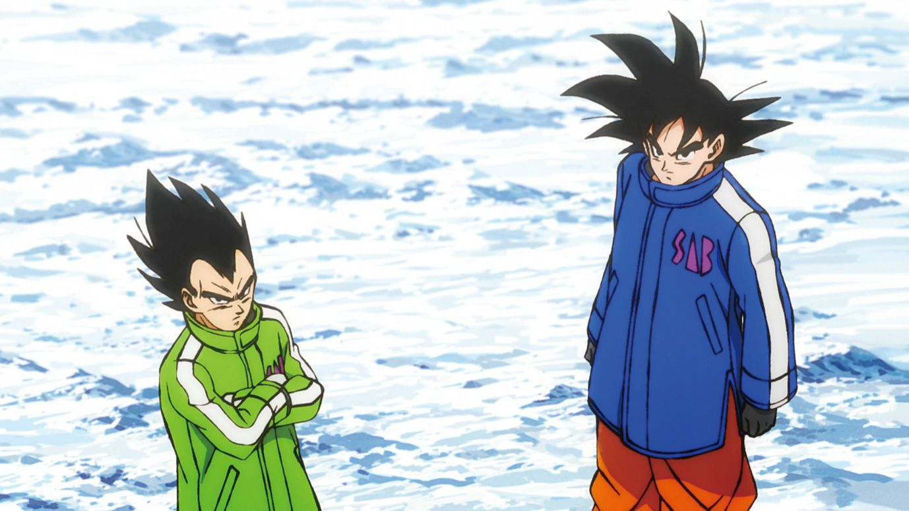
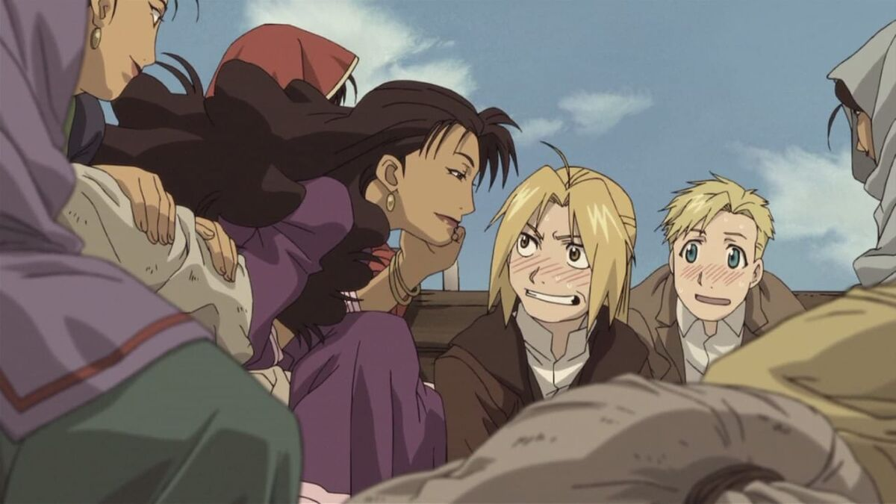

Goku and Vegeta await the arrival of Frieza. However Frieza has not come to Earth alone he arrives with the mysterious powerful Saiyan Broly in tow.
GENRE:Action/Adventure/Fantasy RUNTIME:1h 40m RATING:4.9/5
Earth is at peace after The Tournament of Power but Goku continues to train, knowing there are ever-stronger forces in the universe. With the arrival of a unknown Saiyan warrior named Broly, Goku and Vegeta face their most dangerous challenge yet.
Luffy and Uta reunite after 12 years.

GENRE:Action/Adventure/Comedy/Fantasy RUNTIME:1h 55m RATING:4.4/5
The Straw Hat Pirates travel to the island of Elegia where a famous singer named Uta will have her debut concert. Uta performs her opening song "New Genesis" and Luffy goes on stage to reunite with her, revealing that the two of them know each other because Uta is the daughter of "Red-Haired" Shanks.
Edward and Alphonse travelling with gypsies.
GENRE:Action/Fantasy RUNTIME:1h 45m RATING:4.4/5
Fullmetal Alchemist Edward Elric attempts to return to his home world, having lived for two years in a parallel universe, while his younger brother Alphonse is also trying to reunite with him by any means necessary. Edward's search attracts the attention of the Thule Society, which seeks to enter his homeworld, believing it to be Shamballa , in order to obtain new weapons to help them in World War II.